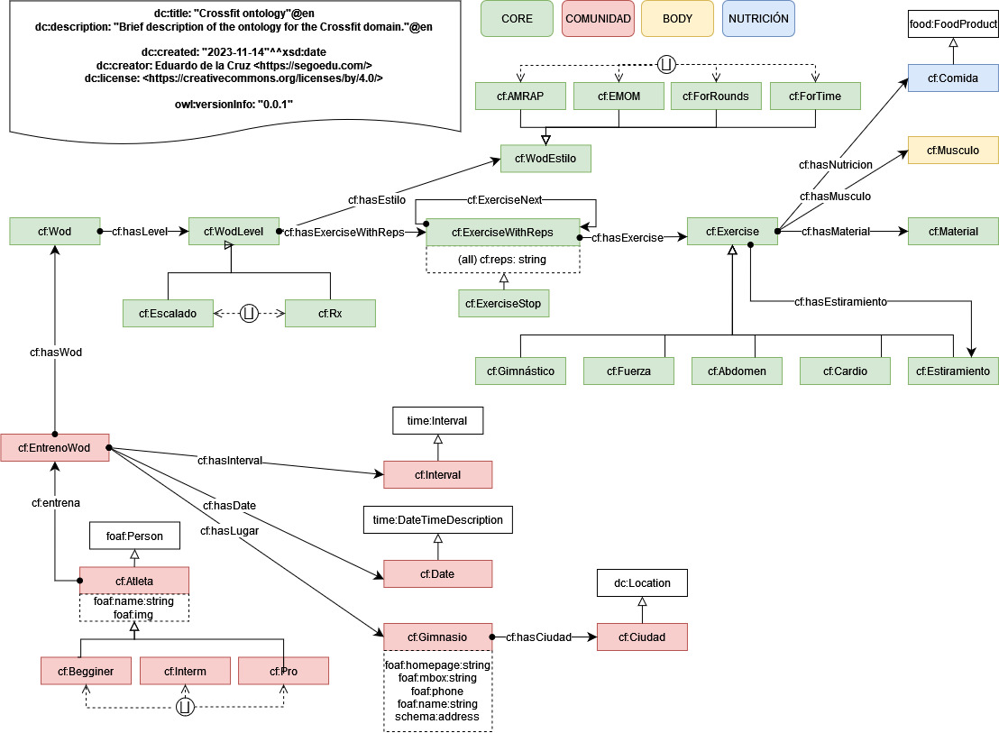

Crossfit ontology: Description back to ToC
La ontología del CrossFit abarcará de manera exhaustiva el dominio del CrossFit, incluyendo movimientos básicos, ejercicios específicos, WODs, gimnasios (también conocidos como "boxes"), atletas a diferentes niveles (desde aficionados hasta avanzados) y aspectos nutricionales relacionados con el rendimiento deportivo. El alcance se extiende a la representación de conceptos y relaciones detallados que permitan una comprensión completa y precisa del dominio, lo que incluye propiedades específicas y relaciones entre entidades.
